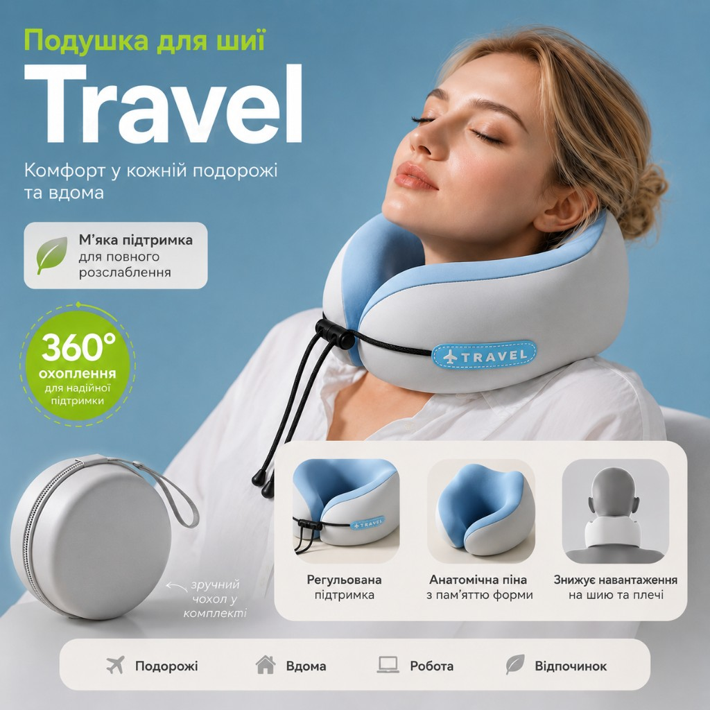
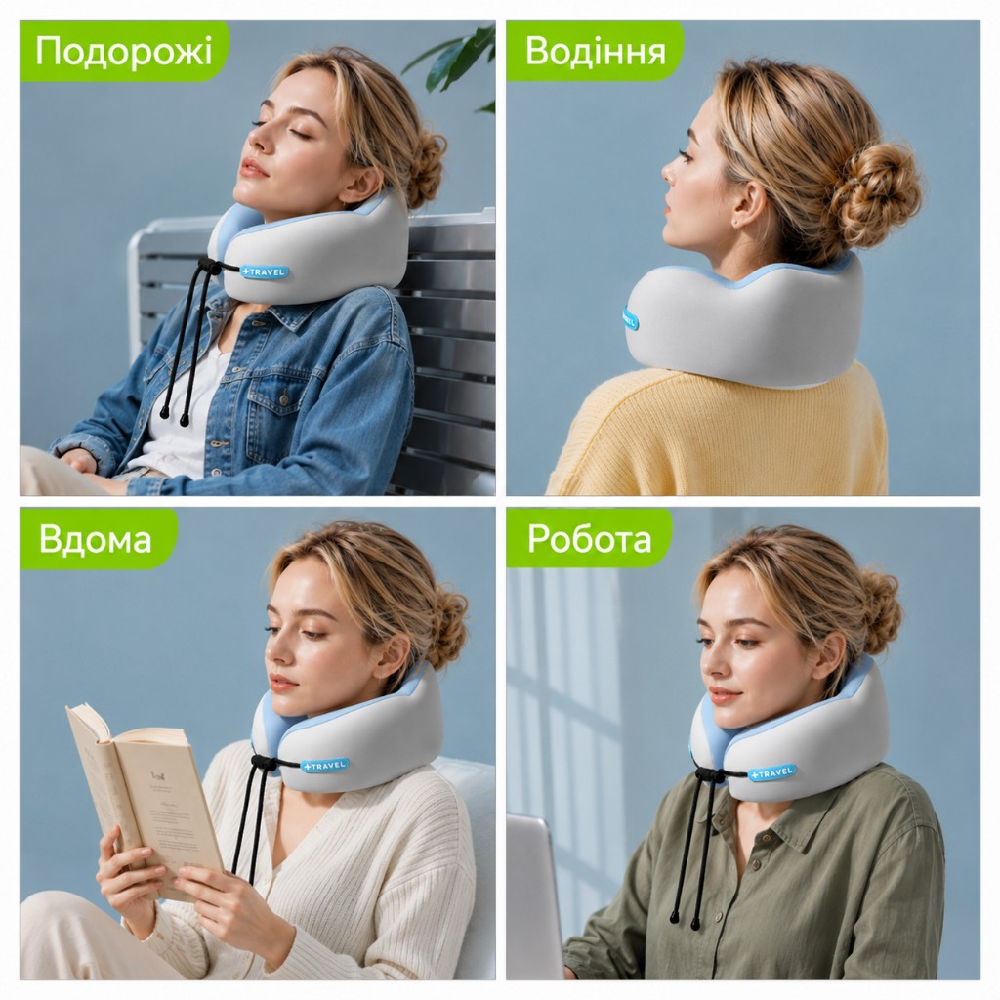
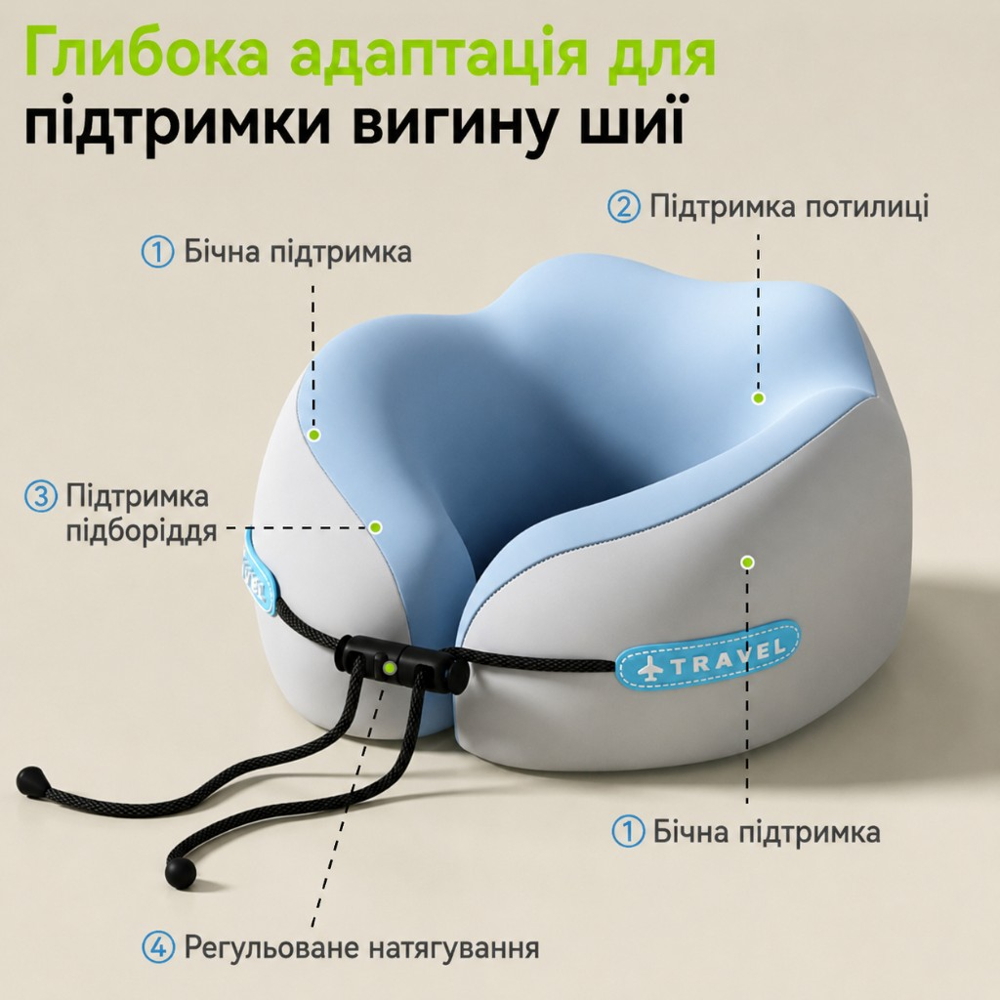
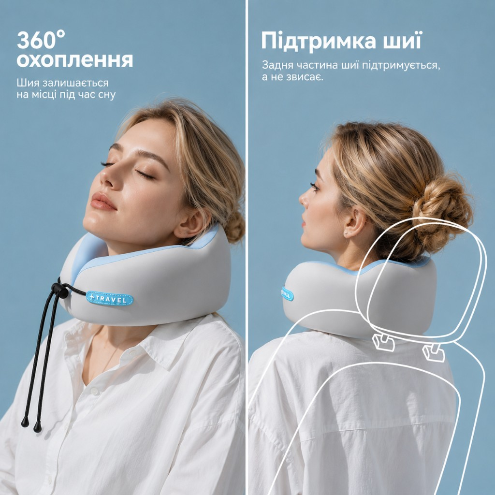
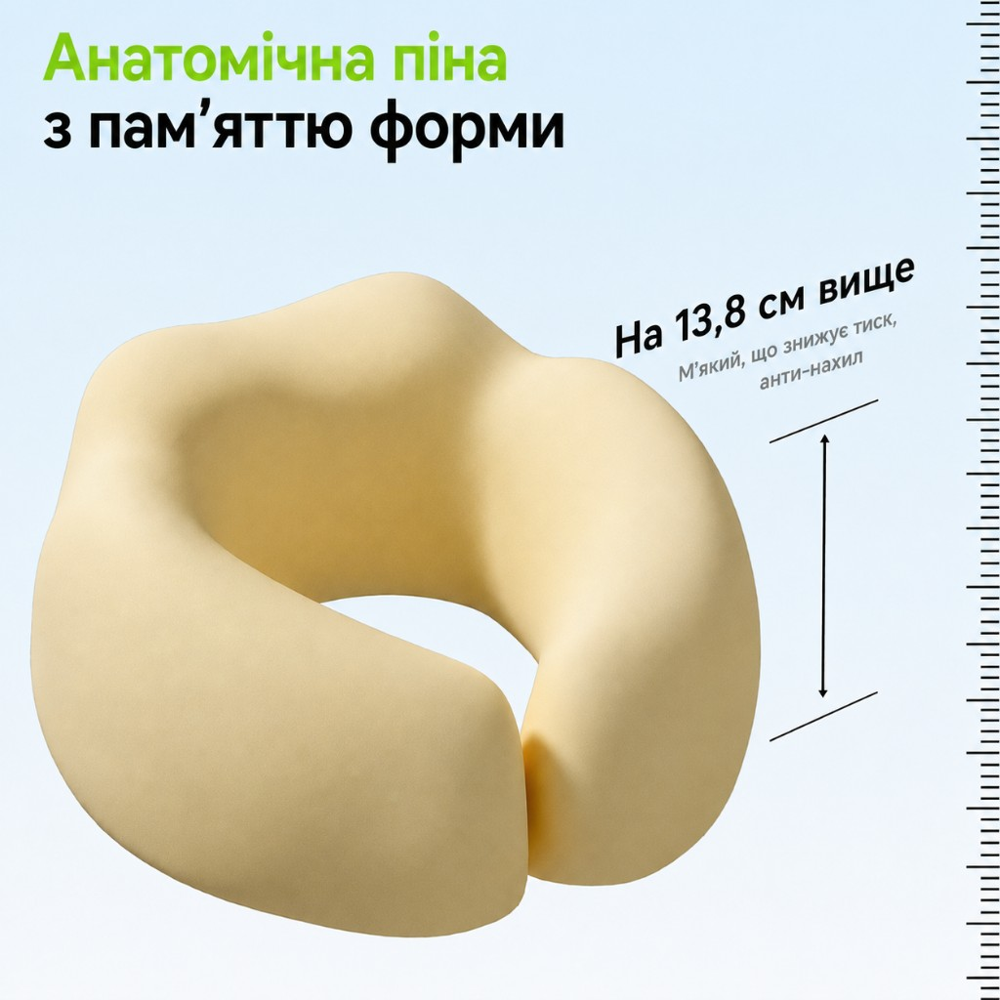
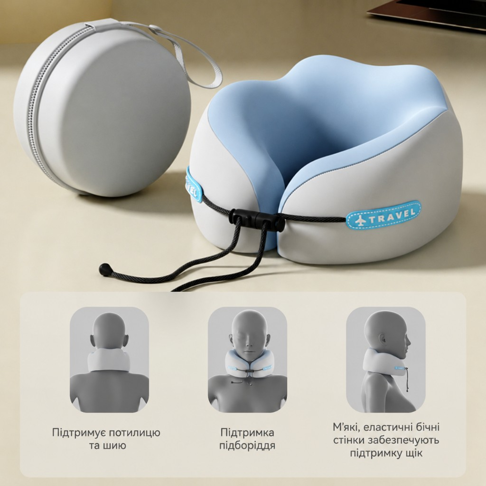

Подорожі
Сон у літаку чи поїзді без «кивання» головою.
Подушка для шиї

У літаку, авто чи на дивані звичайна подушка не тримає голову. Travel фіксує шию з усіх боків — і дає тілу нарешті відпочити.
Де працює найкраще

Сон у літаку чи поїзді без «кивання» головою.
Підтримка шиї на довгих маршрутах.
Знімає напругу біля ноутбука протягом дня.
Читання, серіали, відпочинок без дискомфорту.
Ергономіка

Мʼякі еластичні стінки тримають щоки й не дають голові завалюватися вбік.
Підвищена задня частина заповнює проміжок між шиєю та сидінням.
Передній контур не дає підборіддю падати на груди під час сну.
Шнурок із фіксатором підлаштовує щільність під вашу анатомію.
360° охоплення
Задня частина не «висить» у повітрі — подушка підпирає шию й потилицю, а бічні стінки тримають стабільне положення голови.


Матеріал
13,8 см вища бічна підтримка · мʼяка · анти-нахил
Піна адаптується під контур шиї, рівномірно розподіляє тиск і повільно повертається до форми — без жорстких точок і «провалів».
У комплекті
Компактний круглий футляр із ремінцем — кинути в рюкзак чи ручну поклажу й мати комфорт завжди під рукою.

Факти
Готові відчути різницю?
Посилання ведуть на Rozetka та Prom.ua — картки товару можна підставити пізніше.